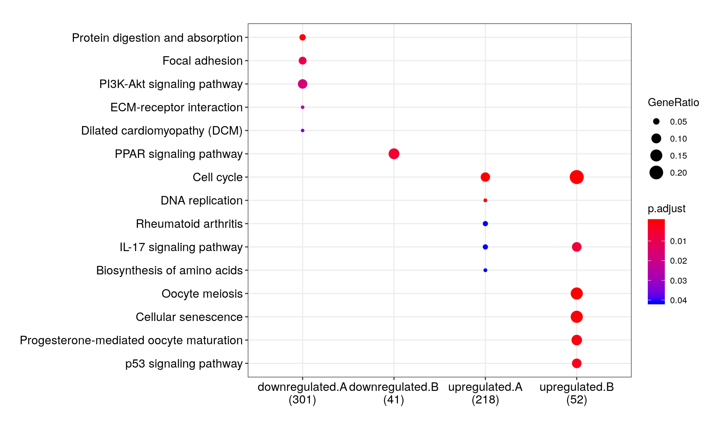
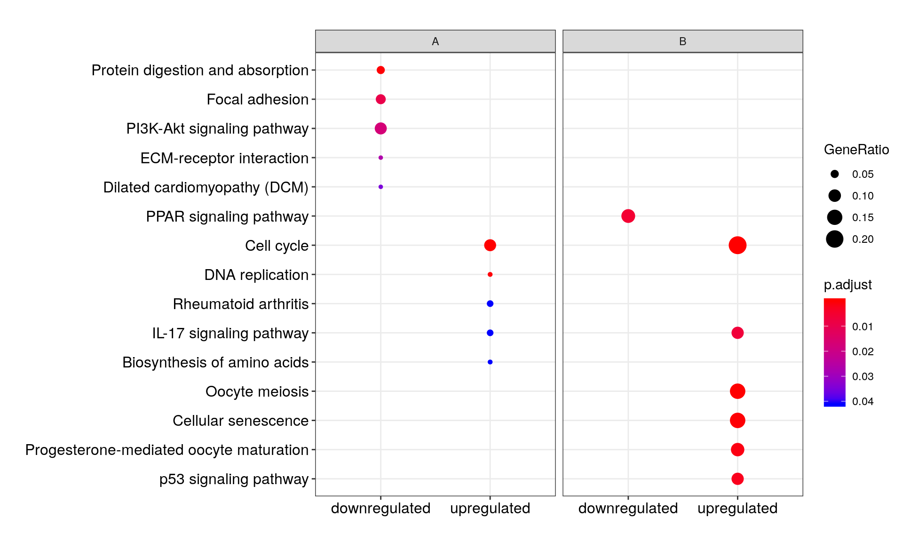

Chapter 11 Biological theme comparison
clusterProfiler was developed for biological theme comparison(Yu et al. 2012), and it provides a function, compareCluster, to automatically calculate enriched functional categories of each gene clusters.
## $X1
## [1] "4597" "7111" "5266" "2175" "755" "23046"
##
## $X2
## [1] "23450" "5160" "7126" "26118" "8452" "3675"
##
## $X3
## [1] "894" "7057" "22906" "3339" "10449" "6566"
##
## $X4
## [1] "5573" "7453" "5245" "23450" "6500" "4926"
##
## $X5
## [1] "5982" "7318" "6352" "2101" "8882" "7803"
##
## $X6
## [1] "5337" "9295" "4035" "811" "23365" "4629"
##
## $X7
## [1] "2621" "2665" "5690" "3608" "3550" "533"
##
## $X8
## [1] "2665" "4735" "1327" "3192" "5573" "9528"The input for geneCluster parameter should be a named list of gene IDs. To speed up the compilation of this document, we set use_internal_data = TRUE.
## Cluster ID Description
## 1 X2 hsa04110 Cell cycle
## 2 X2 hsa05169 Epstein-Barr virus infection
## 3 X2 hsa05340 Primary immunodeficiency
## 4 X3 hsa04512 ECM-receptor interaction
## 5 X3 hsa04060 Cytokine-cytokine receptor interaction
## 6 X3 hsa04151 PI3K-Akt signaling pathway
## GeneRatio BgRatio pvalue p.adjust qvalue
## 1 18/377 124/7932 2.031082e-05 0.005991692 0.005580131
## 2 23/377 201/7932 7.646699e-05 0.011278881 0.010504149
## 3 8/377 38/7932 3.365801e-04 0.033097039 0.030823648
## 4 9/184 88/7932 1.886148e-04 0.046098793 0.043070680
## 5 17/184 294/7932 4.568593e-04 0.046098793 0.043070680
## 6 19/184 354/7932 5.360325e-04 0.046098793 0.043070680
## geneID
## 1 991/1869/890/1871/701/990/10926/9088/8317/9700/9134/1029/2810/699/11200/23594/8555/4173
## 2 4067/3383/7128/1869/890/1871/578/864/637/9641/6891/355/9134/5971/916/956/6850/7187/3551/919/4734/958/6772
## 3 100/6891/3932/973/916/925/958/64421
## 4 7057/3339/1299/3695/1101/3679/3910/3696/3693
## 5 2919/4982/3977/6375/8200/608/8792/3568/2057/1438/8718/655/652/10220/50615/51561/7042
## 6 894/7057/6794/2247/1299/3695/2252/2066/1101/8817/1021/5105/3679/3082/2057/3910/3551/3696/3693
## Count
## 1 18
## 2 23
## 3 8
## 4 9
## 5 17
## 6 1911.1 Formula interface of compareCluster
compareCluster also supports passing a formula (the code to support formula has been contributed by Giovanni Dall’Olio) of type \(Entrez \sim group\) or \(Entrez \sim group + othergroup\).
mydf <- data.frame(Entrez=names(geneList), FC=geneList)
mydf <- mydf[abs(mydf$FC) > 1,]
mydf$group <- "upregulated"
mydf$group[mydf$FC < 0] <- "downregulated"
mydf$othergroup <- "A"
mydf$othergroup[abs(mydf$FC) > 2] <- "B"
formula_res <- compareCluster(Entrez~group+othergroup, data=mydf, fun="enrichKEGG")
head(as.data.frame(formula_res))## Cluster group othergroup ID
## 1 downregulated.A downregulated A hsa04974
## 2 downregulated.A downregulated A hsa04510
## 3 downregulated.A downregulated A hsa04151
## 4 downregulated.A downregulated A hsa04512
## 5 downregulated.B downregulated B hsa03320
## 6 upregulated.A upregulated A hsa04110
## Description GeneRatio BgRatio
## 1 Protein digestion and absorption 15/307 95/7932
## 2 Focal adhesion 20/307 199/7932
## 3 PI3K-Akt signaling pathway 28/307 354/7932
## 4 ECM-receptor interaction 11/307 88/7932
## 5 PPAR signaling pathway 5/41 76/7932
## 6 Cell cycle 20/218 124/7932
## pvalue p.adjust qvalue
## 1 3.114113e-06 8.345823e-04 7.834453e-04
## 2 8.223661e-05 1.101971e-02 1.034450e-02
## 3 2.376469e-04 2.122979e-02 1.992898e-02
## 4 5.455340e-04 3.655078e-02 3.431122e-02
## 5 4.047669e-05 5.909597e-03 5.453701e-03
## 6 1.223342e-10 2.899321e-08 2.588334e-08
## geneID
## 1 1281/50509/1290/477/1294/1360/1289/1292/23428/1359/1300/1287/6505/2006/7373
## 2 55742/2317/7058/25759/56034/3693/3480/5159/857/1292/3908/3909/63923/3913/1287/3679/7060/3479/10451/80310
## 3 55970/5618/7058/10161/56034/3693/4254/3480/4908/5159/1292/3908/2690/3909/8817/9223/4915/3551/2791/63923/3913/9863/3667/1287/3679/7060/3479/80310
## 4 7058/3693/3339/1292/3908/3909/63923/3913/1287/3679/7060
## 5 9370/5105/2167/3158/5346
## 6 4171/993/990/5347/701/9700/898/23594/4998/9134/4175/4173/10926/6502/994/699/4609/5111/1869/1029
## Count
## 1 15
## 2 20
## 3 28
## 4 11
## 5 5
## 6 2011.2 Visualization of profile comparison
We can visualize the result using dotplot method.



By default, only top 5 (most significant) categories of each cluster was plotted. User can changes the parameter showCategory to specify how many categories of each cluster to be plotted, and if showCategory was set to NULL, the whole result will be plotted.
The plot function accepts a parameter by for setting the scale of dot sizes. The default parameter by is setting to “geneRatio”, which corresponding to the “GeneRatio” column of the output. If it was setting to count, the comparison will be based on gene counts, while if setting to rowPercentage, the dot sizes will be normalized by count/(sum of each row)
To provide the full information, we also provide number of identified genes in each category (numbers in parentheses) when by is setting to rowPercentage and number of gene clusters in each cluster label (numbers in parentheses) when by is setting to geneRatio, as shown in Figure 3. If the dot sizes were based on count, the row numbers will not shown.
The p-values indicate that which categories are more likely to have biological meanings. The dots in the plot are color-coded based on their corresponding p-values. Color gradient ranging from red to blue correspond to in order of increasing p-values. That is, red indicate low p-values (high enrichment), and blue indicate high p-values (low enrichment). P-values and adjusted p-values were filtered out by the threshold giving by parameter pvalueCutoff, and FDR can be estimated by qvalue.
User can refer to the example in Yu (2012)(Yu et al. 2012); we analyzed the publicly available expression dataset of breast tumour tissues from 200 patients (GSE11121, Gene Expression Omnibus)(Schmidt et al. 2008). We identified 8 gene clusters from differentially expressed genes, and using compareCluster to compare these gene clusters by their enriched biological process.
The comparison function was designed as a framework for comparing gene
clusters of any kind of ontology associations, not only groupGO,
enrichGO, enrichKEGG and enricher provided in this package, but
also other biological and biomedical ontologies, for instance,
enrichDO from DOSE(Yu et al. 2015), enrichMeSH from
meshes and enrichPathway from ReactomePA work fine with compareCluster for comparing biological themes in disease and reactome pathway perspective. More details can be found in the vignettes of DOSE(Yu et al. 2015) and ReactomePA.
References
Schmidt, Marcus, Daniel B?hm, Christian von T?rne, Eric Steiner, Alexander Puhl, Henryk Pilch, Hans-Anton Lehr, Jan G. Hengstler, Heinz K?lbl, and Mathias Gehrmann. 2008. “The Humoral Immune System Has a Key Prognostic Impact in Node-Negative Breast Cancer.” Cancer Research 68 (13): 5405–13. https://doi.org/10.1158/0008-5472.CAN-07-5206.
Yu, Guangchuang, Le-Gen Wang, Yanyan Han, and Qing-Yu He. 2012. “ClusterProfiler: An R Package for Comparing Biological Themes Among Gene Clusters.” OMICS: A Journal of Integrative Biology 16 (5): 284–87. https://doi.org/10.1089/omi.2011.0118.
Yu, Guangchuang, Li-Gen Wang, Guang-Rong Yan, and Qing-Yu He. 2015. “DOSE: An R/Bioconductor Package for Disease Ontology Semantic and Enrichment Analysis.” Bioinformatics 31 (4): 608–9. https://doi.org/10.1093/bioinformatics/btu684.